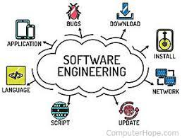

Before taking a software engineering course, I always wonder what exactly software engineering is. Is it a coding class? Do we develop software? Yes, those are part of the basic concepts. To begin, one of the most significant concepts in software engineering is configuration management. The most popular platform we use is Github. GitHub used the idea of centralized configuration management. We create a repository and resolve different issues in our application development using the branching methodology. That is, having a master branch and creating a different branch with replication codes from the master branch. Then we can work on resolving the issues on a different branch without having to modify codes from the master branch. When the work is complete and tested for compatibility, we can commit and merge the changes to the master branch.
Another powerful skill set we learned is functional programming. The benefit of using functions is to make our code more organized, cleaner, and maintainable. A popular functional programming language is JavaScript underscore utility. Using forEach function simply replaced the for loop. The pluck function extracts a list of property values in one line of code which usually requires more lines to have this functionality. Choosing a development environment will drastically increase the efficiency of the development process. My personal favorite is IntelliJ IDEA. Another popular option would be Visual Studio Code. The reason why it truncates the development time is that it detects and imports the necessary API for the codes to run. Additionally, it has a quality assurance tool like ESLINT to scrutiny for any errors in the code. For instance, improper indentation, missing or unused imports, potentially misspelled words, etc.